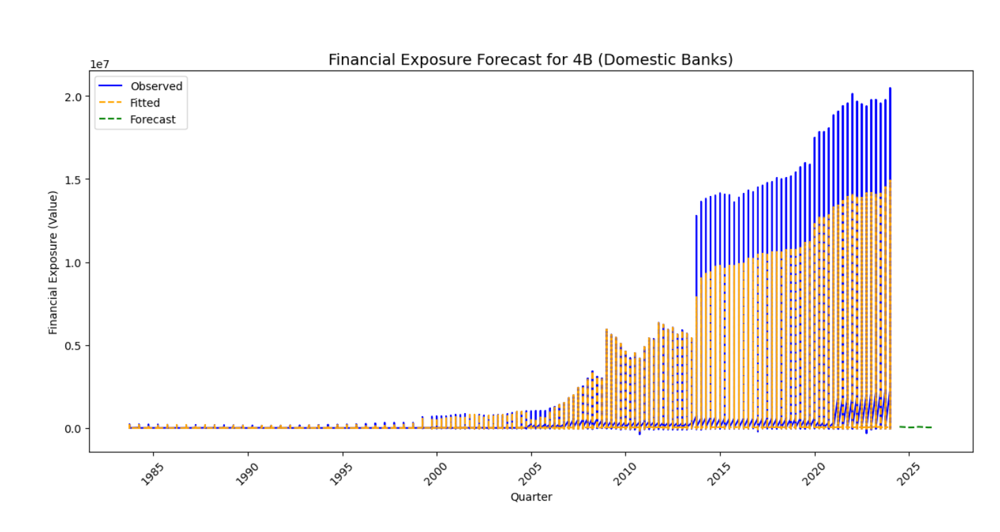
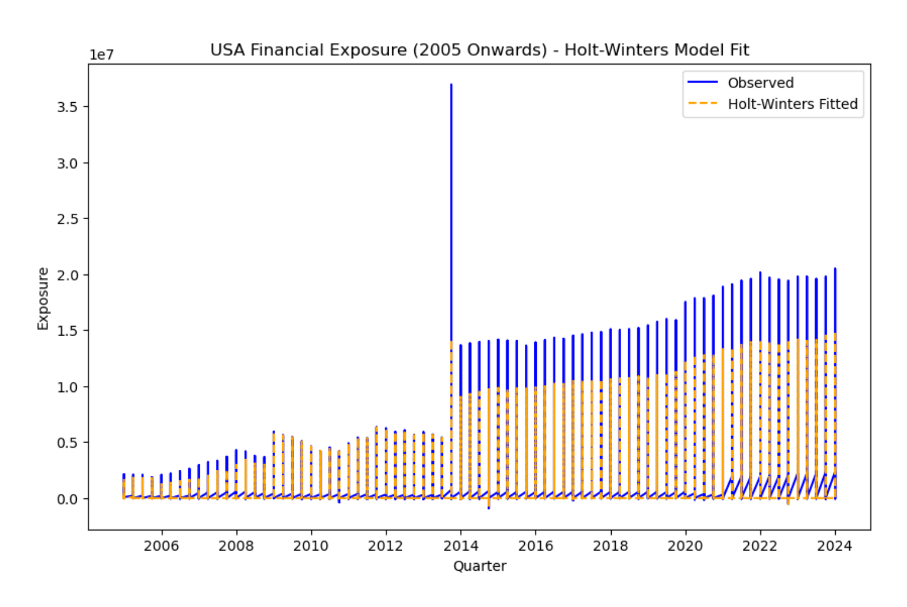
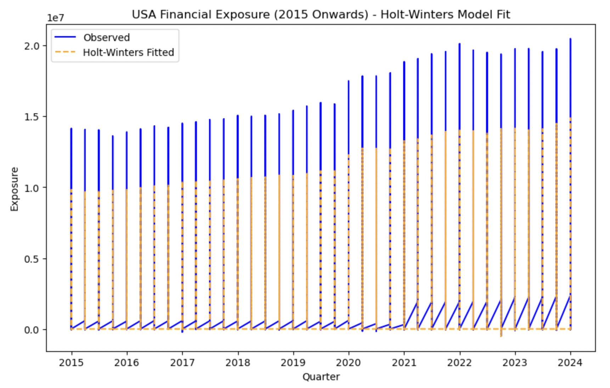
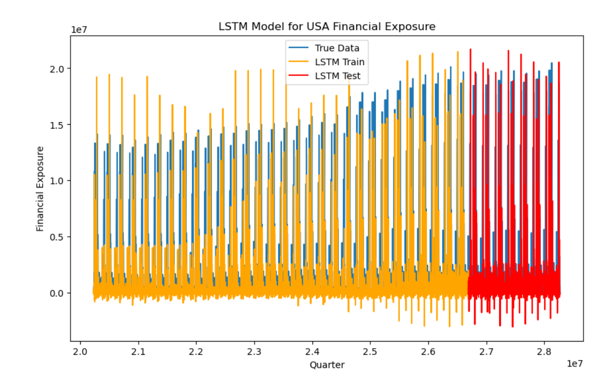

This project analyzes the evolution of financial exposure across different categories of banks in the United States, utilizing quarterly data from the BIS global banking dataset. The study focuses on trends, risks, and the impact of the 2008 financial crisis on domestic and foreign banks operating within the U.S. financial system.
The following visualization showcases the trends in financial exposure for various types of banks in the United States, segmented by categories such as Domestic Banks, Foreign Banks, and consolidated financial exposure from parent companies. These charts highlight significant trends before and after the 2008 financial crisis, with an emphasis on systemic risk, international diversification, and post-crisis recovery.

This composite visualization provides a comprehensive view of financial exposure trends across different bank categories in the United States over time, highlighting key developments before and after the 2008 crisis.
1. Domestic Banks (4B & 4R): The financial exposure of domestic banks shows a significant increase starting around 2008, reflecting recovery efforts post-financial crisis. The steep rise in the 4R category suggests a boost in international transactions and investments.
2. All Banks Excluding 4C (4O): A generally increasing trend with volatility highlights the growing exposure to international markets. These fluctuations indicate higher-risk activities abroad, as banks sought to diversify post-crisis.
3. Domestic Banks: The financial exposure for domestic banks (4B) shows steady growth over time, indicating the stabilization of domestic activities and assets after the 2008 financial crisis.
4. Inside-Area Foreign Banks Consolidated by Parent (4C): The steady rise in exposure for foreign banks consolidated by their parent companies (4C) suggests that foreign banks have strengthened their presence within the U.S. financial system post-crisis.
5. All Banks (4M): The exposure for all banks shows sharp increases leading to the 2008 financial crisis, followed by heightened volatility. This indicates increased systemic risk during the crisis, with subsequent recovery marked by fluctuations in financial activities.
The data indicates a marked recovery in financial exposure across various types of banks following the 2008 financial crisis. The increased exposure, particularly post-2008, reflects global diversification strategies and risk management practices as banks sought to stabilize and grow their portfolios. The fluctuations seen in categories such as 4M and 4O demonstrate engagement in higher-risk international activities, likely influenced by changes in global economic conditions and regulatory frameworks.
The consolidation of foreign banks within the U.S. system, as seen in the 4C category, also highlights the growing international presence in the U.S. financial landscape. This trend reflects the overall robustness of the U.S. banking system in adapting to post-crisis challenges and strengthening its global reach.
This project focuses on forecasting financial exposure trends for U.S. banks using time series models such as Holt-Winters Exponential Smoothing and LSTM Neural Networks. By utilizing both traditional statistical methods and advanced deep learning models, we aim to capture linear, seasonal, and non-linear patterns in financial data. Below are the results and insights from our analyses using the two forecasting techniques.
We used quarterly financial exposure data from U.S. banks to build our forecasting models. The two models we implemented are:
The Holt-Winters model was applied to the financial exposure of domestic banks (4B), forecasting future trends using additive seasonality and trend components.
This visualization illustrates the fit of the Holt-Winters model on U.S. financial exposure data from 2005 onwards. The model captures the additive seasonal components and provides a smooth prediction of future trends based on past behavior.
This visualization illustrates the fit of the Holt-Winters model on U.S. financial exposure data from 2015 onwards. The model captures the additive seasonal components and provides a smooth prediction of future trends based on past behavior.
The LSTM model was trained on the historical financial exposure data and used to predict future trends. The model effectively captures complex patterns, as shown in the comparison between true data, LSTM training, and LSTM test predictions.
The implementation of the two models is shown below:
from statsmodels.tsa.holtwinters import ExponentialSmoothing
model_hw = ExponentialSmoothing(data, seasonal='add', seasonal_periods=4).fit()
forecast_hw = model_hw.forecast(steps=8)
from keras.models import Sequential
from keras.layers import LSTM, Dense
model_lstm = Sequential()
model_lstm.add(LSTM(50, return_sequences=True, input_shape=(time_steps, 1)))
model_lstm.add(LSTM(50))
model_lstm.add(Dense(1))
model_lstm.compile(optimizer='adam', loss='mean_squared_error')
model_lstm.fit(X_train, y_train, epochs=100, batch_size=32, validation_data=(X_test, y_test))